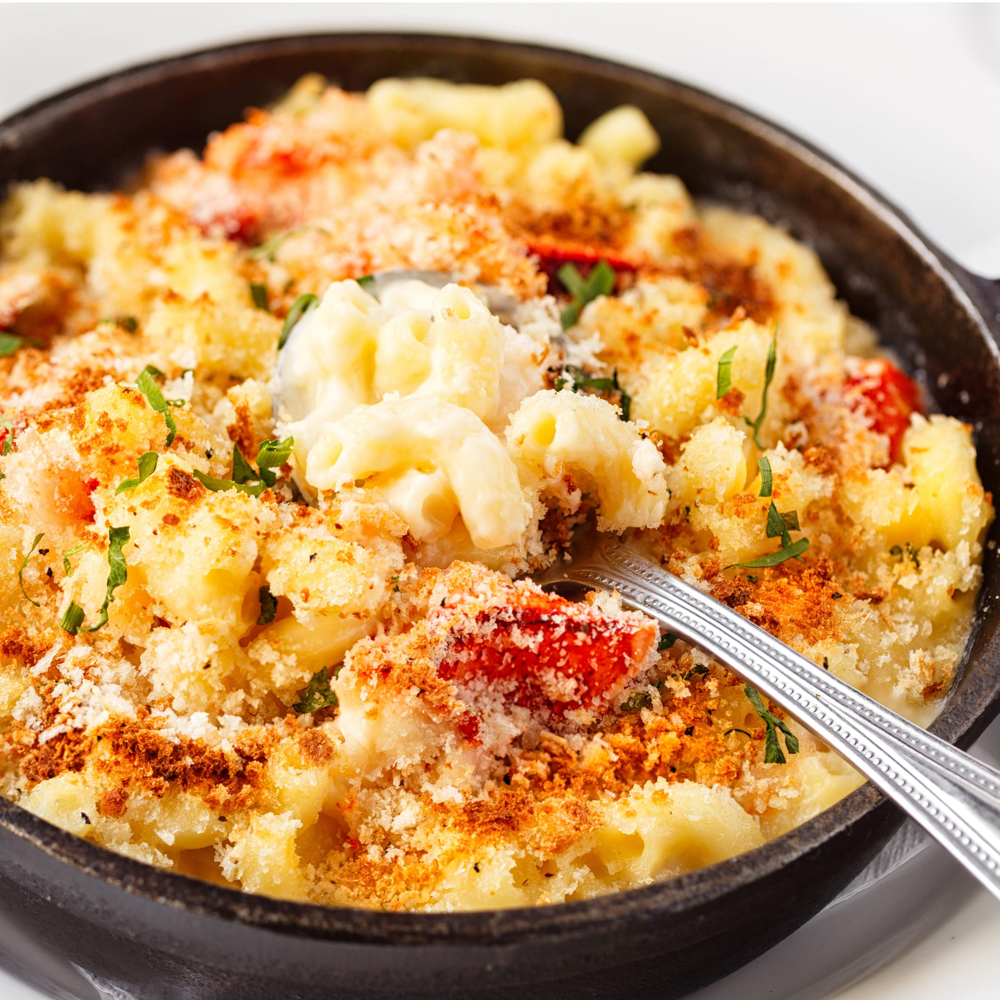

Lobster Mac and Cheese

Description
Ever want to feel broke and rich at the same time? Well I have just the
dish for you! This lobster mac and cheese recipie is the perfect blend of
class and home savory goodness!
Ingredients
- 16 ounce package elbow macaroni
- 2 pound lobster
- 7 tablespoons butter, divided
- 1 small onion, diced
- 7 tablespoons butter, divided
- 1 small diced onion
- 2 cups milk
- 1 chopped shallot
- 10 black peppercorns
- 1 clove garlic minced
- 5 tablespoons all-purpose flour
- 1 pound shredded Gruyere cheese
- 3 cups shredded Cheddar cheese
- 1 cup goated Romano cheese
- kosher salt and pepper
- 3 tablespoons panko bread crumbs
Steps
- Gather all ingredients
-
Bring a large pot of lightly salted water to a boil. Cook elbow macaroni
in boiling water, stirring occasionally, until tender yet firm to the
bite, about 8 minutes. Reserve 2 cups hot pasta water, then drain
macaroni in a colander set in the sink. Rinse with cold water to cool;
set aside.
-
Pour reserved pasta water into the same pot and add lobster halves,
cut-side up. Bring to a boil, then reduce heat to medium-low, cover, and
steam until lobster meat firms and turns opaque, about 3 minutes.
-
Remove lobster to a tray and cool for a few minutes, then remove lobster
meat and cut into bite-sized pieces. Reserve shells.
-
Melt 2 tablespoons butter in a saucepan over medium heat. Cook and stir
onion in hot butter until onion is softened and translucent, about 5
minutes. Remove onions to a small bowl; set aside.
-
Place reserved lobster shells, milk, shallot, peppercorns, and garlic
into the same saucepan. Bring to a gentle simmer over medium heat and
cook for 20 minutes.
- Preheat the oven to 350 degrees F (175 degrees C).
-
Melt remaining 5 tablespoons butter in a separate saucepan over
medium-low heat. Whisk in flour and stir until mixture turns pasty and
light golden brown, about 10 minutes. Strain milk mixture through a mesh
sieve and slowly pour into flour mixture while whisking. Bring to a
simmer over medium heat; cook and stir until thick and smooth, 10 to 15
minutes. Remove from heat.
-
Stir Gruyère, Cheddar, and Romano cheeses into thickened milk mixture
until melted and smooth. Season with salt and pepper, then stir in
reserved lobster meat, onions, and macaroni.
-
Pour mixture into a 4-quart casserole dish and smooth the top. Sprinkle
evenly with panko crumbs.
-
Bake in the preheated oven until sauce is bubbly and the top is golden
brown, 8 to 12 minutes.
Home